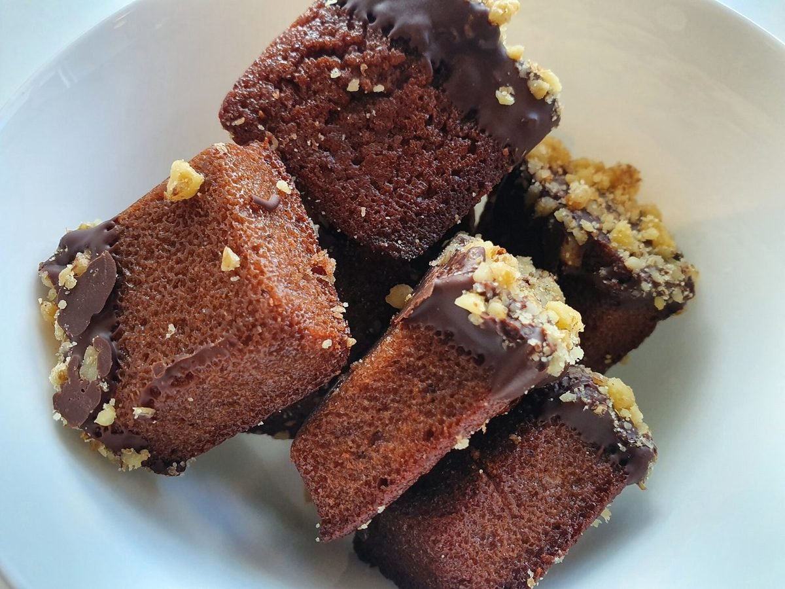
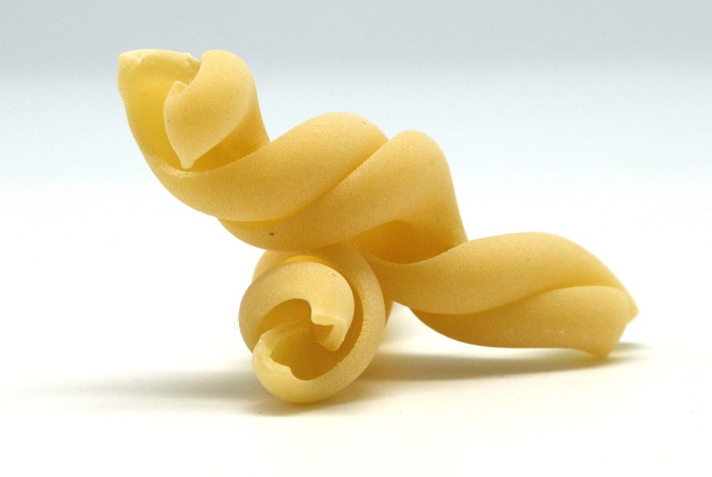
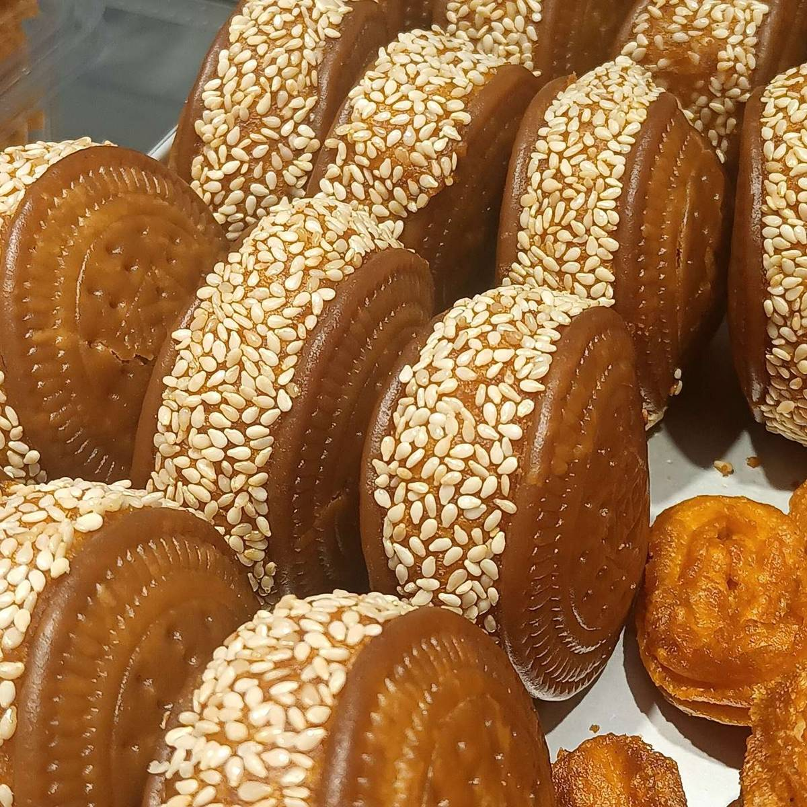
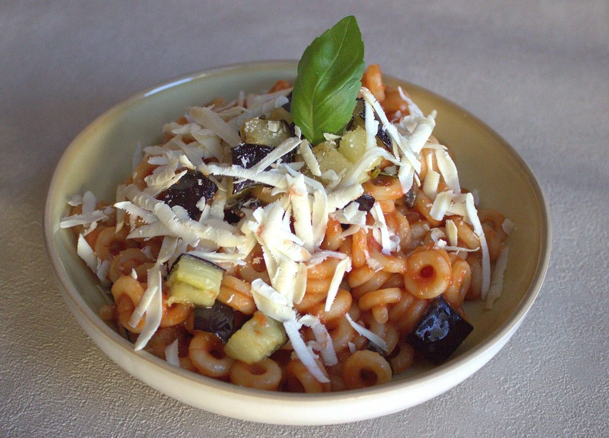

1 卵受け・2 ワイヤー
1 卵受け / 2 ワイヤー
メニュー
「1 卵受け」と「2 ワイヤー」の受け持ちです。ここは、お店のメニューを載せるところ。内容は準備中です。



1 卵受け(たまごうけ)/ 2 ワイヤー
くぼみに置いて、細い線で等分する
卵受けは、ゆで卵をのせる浅いくぼみです。その上に張られたワイヤーが、押し下げると卵を同じ幅に切り分けます。このページはその二つの部位の受け持ちで、お店のメニューを載せる場所として設けました。
| メニュー | 準備中 |
|---|---|
| 価格 | 準備中 |
| 予約・お取り置き | 準備中 |
| 営業時間・定休日 | 準備中 |
メニュー・価格は、お店からの情報をいただいてから掲載します。下の写真はフリー素材のイメージで、お店の商品ではありません。

